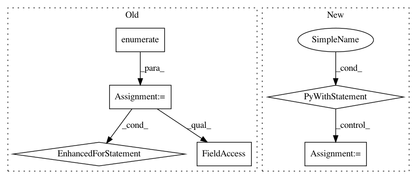

303217b34070dc47a86622b62764098999b0d7f5,gpytorch/lazy/lazy_tensor.py,LazyTensor,_quad_form_derivative,#LazyTensor#Any#Any#,378
Before Change
toggled = [False] * len(args)
for i, arg in enumerate(args):
if not arg.requires_grad:
arg.requires_grad = True
toggled[i] = True
loss = (left_vecs * self._matmul(right_vecs)).sum()
loss.requires_grad_(True)
grads = torch.autograd.grad(loss, args, allow_unused=True)
After Change
return tuple(None for _ in args)
// Normal case: we"ll use the autograd to get us a derivative
with torch.autograd.enable_grad():
loss = (left_vecs * self._matmul(right_vecs)).sum()
loss.requires_grad_(True)
actual_grads = deque(torch.autograd.grad(loss, args_with_grads, allow_unused=True))
// Now make sure that the object we return has one entry for every item in args
grads = []
for arg in args:
if arg.requires_grad:
grads.append(actual_grads.popleft())
In pattern: SUPERPATTERN
Frequency: 3
Non-data size: 6
Instances
Project Name: cornellius-gp/gpytorch
Commit Name: 303217b34070dc47a86622b62764098999b0d7f5
Time: 2018-12-12
Author: gpleiss@gmail.com
File Name: gpytorch/lazy/lazy_tensor.py
Class Name: LazyTensor
Method Name: _quad_form_derivative
Project Name: nipy/dipy
Commit Name: a17b669606cdc5c16fb823b5f00abcacf6a68d70
Time: 2012-10-24
Author: mrbago@gmail.com
File Name: dipy/reconst/dti.py
Class Name: TensorFit
Method Name: odf
Project Name: explosion/thinc
Commit Name: 20ca9d882e448df5f1a9c5c0d74772763651826a
Time: 2020-01-04
Author: honnibal+gh@gmail.com
File Name: thinc/model.py
Class Name: Model
Method Name: use_params